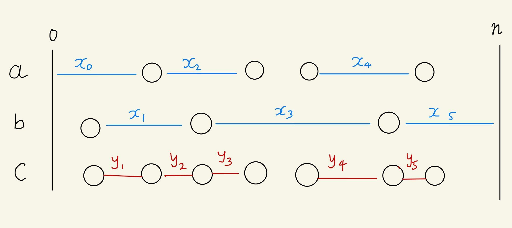

二分探索木の meld
概要
binary trie を meld できるという話 を読んでいたら思いついたこと.
順序を持つ要素型に対し, 次の操作をサポートする集合データ構造(典型的には平衡二分探索木)を考える.
- $\new()$: 空の集合を作る.
- $\insert(S, x)$: $S$ に値をひとつ挿入する.
- $\split(S, x)$: $S$ を $x$ 未満の要素全体からなる木と $x$ 以上の要素全体からなる木に分割する.
- $\concat(S, T)$: $S$ の任意の要素は $T$ の任意の要素より小さいという条件のもと, $S$ と $T$ を結合する. $S$ と $T$ は破壊される.
- $\min(S)$: $S$ の最小の要素を($S$ から取り除くことなく)返す. $S$ に要素が存在しない場合はそれを報告する.
これらを利用して
- $\meld(S, T)$: $S$ と $T$ の和集合を返す. $S$ と $T$ は破壊される.
を実現できる. insert をちょうど $n$ 回, split をちょうど $m$ 回, meld をちょうど $l$ 回含む操作列に対し, その $l$ 回の meld は, $w = \lceil \log_2 n \rceil$ として, $O(w (n + m) + l)$ 回の min, split, concat を用いて実現できる.
よくある 平衡二分探索木は new を $O(1)$, insert, split, concat, min を $O(\log n)$ でサポートするから, 償却して insert, split, concat, min を amortized $O((\log n)^2)$, meld を amortized $O(1)$ でサポートできる.
アルゴリズム
$\insert(x)$ が呼ばれた際, $x$ の換わりに $x$ と insert がこれまで呼ばれた回数のペアを保存することなどにより, 与えられる全ての要素は相異なるとしてよい.
meld はよくある sorted merge をスキップしつつ実装する. 具体的には,
1
2
3
4
5
6
7
8
9
10
fn meld(mut lhs: Set, mut rhs: Set) -> Set {
let mut res = Set::new();
while !lhs.is_empty() && !rhs.is_empty() {
let pivot = lhs.min().unwrap();
let (small, large) = rhs.split(pivot);
res = Set::concat(res, small);
(lhs, rhs) = (large, lhs);
}
return Set::concat(res, Set::concat(lhs, rhs));
}
とする. (注: distinct でなかった場合無限ループする. split を未満と以上で分割するかわりに以下とより大で分割するようにすれば無限ループは解消できるが, distinct でない場合計算量解析でちょっと面倒になると思う.)
計算量解析
insert をちょうど $n$ 回, split をちょうど $m$ 回, meld をちょうど $l$ 回含む操作列を考える. $w = \lceil \log_2 n \rceil$ として, meld のループが合計で $O(w (n + m) + l)$ 回まわることを言えばよい.
この操作列に含まれる $x$ を, ソート順で $0$-origin で 何番目に来るかを表わす $0$ から $n-1$ までの$w$ ビットの値で置き換えて考える.1 2
lhs に含まれる要素をソートした列を $a$, rhs に含まれる要素をソートした列を $b$, $\meld(\mathrm{lhs}, \mathrm{rhs})$ に含まれる要素をソートした列を $c$ とする. $c$ は, $a$ から来た要素からなる連続部分列と $b$ から来た要素からなる連続部分列が交互に表れるが, これが切り換わる回数 $\cnt(a, b)$ がほぼループ回数なので, これを上から評価したい.
参考文献1 のように, 各集合に深さ $w$ の binary trie を対応させ, その頂点数を考える.
insert, split を実行すると, binary trie の合計頂点数は高々 $w$ 増える.
new, concat, min で binary trie の合計頂点数が増えることはない.
一方で $c = \meld(a, b)$ を実行すると, $a$ に対応する binary trie の含まれる頂点と $b$ に対応する trie に含まれる頂点のうち, 同じ prefix に対応する頂点の個数だけ合計頂点数が減る. $c$ 内で $a$ の要素と $b$ の要素が切り換わる隣接ペアの, $c$ に対応する binary trie 上での LCA を考えると, これは当然 $a$ に対応する binary trie にも $b$ に対応する binary trie にも含まれる. 更にこの対応は単射である. 実際, $a$ に対応する binary trie と $b$ に対応する binary trie で重複していた $c$ に対応する binary trie の頂点 $t$ に対し, それを LCA として持つ $c$ 内の隣接要素は, $t$ の左部分木の最大の葉と $t$ の右部分木の最小の葉に対応するもののみである. 従って, $c = \meld(a, b)$ で binary trie の合計頂点数は少なくとも $\cnt(a, b)$ だけ減る.
以上を合わせると, $\cnt$ の合計は $w (n + m)$ を越えることはなく, 従って meld のループは合計高々 $w (n + m) + l$ 回まわる.
わからんこと
- 計算量のオーダーはタイトだろうか. ループの回数が除去される頂点数以下であることしか言っていないのとか,
concatにかかる計算量が高さの差分くらいのオーダーなことを利用していないとか,concatの順序を調節してマージテクのようにしたらどうかとか. - Splay 木だと計算量のオーダーが落ちたりしてもおかしくない気がするが, どうだろうか.
- binary trie の
meldと似た, 平衡二分探索木向けの次のようなアルゴリズムが考えられるが, これの計算量はどうなるだろうか. 上の議論での切り換わる点を子孫として含む $O(\cnt(a, b) \log n)$ 頂点くらいでmeldが呼ばれ, $O((\log n)^3)$ くらいになりそうな気がするが, よりよい評価はできるだろうか.splitが非空な分割をする回数は $O(\cnt(a, b))$ に抑えられると思うが...
1
2
3
4
5
6
7
8
9
10
11
12
13
fn meld(mut lhs: Tree, mut rhs: Tree) -> Tree {
if lhs.len() < rhs.len() { // もしくは平衡条件に合うよりよい指標で
(lhs, rhs) = (rhs, lhs);
}
if rhs.is_empty() {
return lhs;
}
let (rl, rr) = rhs.split(lhs.key);
lhs.l = meld(lhs.l, rl);
lhs.r = meld(lhs.r, rr);
lhs.rebalance();
return lhs
}
参考文献
- Codeforces の TLE によるブログ記事 using merging segment tree to solve problems about sorted list
追記 2024/04/29: 先行研究
追記 2024/04/30: binary trie を経由しない計算量解析
最小元と最大元の番兵を考慮している集合に追加し, それらを含む 0-origin のソート順で考える.
ソート列 $\{a_i\}_{i=1}^{k}$ に対するポテンシャルを, $a_0 = 0$, $a_{k+1} = n$ として $\sum_{i=0}^k \log_2 (a_{k+1} - a_k)$ で定義すると, ポテンシャルの合計は new, insert, split で高々 $2 w$ 増え, concat, min で増えることはない.
$c = \meld(a, b)$ を実行すると, $a$, $b$ の差分のうち間にもう一方が入るものが消え, $c$ の差分のうち両端点が異なるほうから来たものが増える. より具体的に, $a$ に番兵を追加したものの隣接要素で作られる区間の集合($[0, n]$ の $a$ による細分)のうち $b$ の要素を含むものと, $b$ に番兵を追加したものの隣接要素で作られる区間の集合のうち $a$ の要素を含むものの和集合を左端点が小さい順に並べ, その幅を $\{x_i\}_{i=0}^k$ とする. また, $c$ に番兵を追加したものの隣接要素で作られる区間のうち端点が $a$ と $b$ の異なる方から来ているものを左端点が小さい順に並べ, その幅を $\{y_i\}_{i=1}^{k}$ とすると, ポテンシャルの合計は $\sum_{i=0}^k \log_2(x_i) - \sum_{i=1}^k \log_2(y_i)$ だけ減る. また, $1 \le i \le k-1$ な $i$ に対し, $x_i \ge y_i + y_{i+1}$ である.
各 $i (1 \le i \le k-1)$ で $x_i \ge 2 y_i$ と $x_i \ge 2 y_{i+1}$ の少なくとも一方が成りたつから, (そうでない場合は $x$ と $y$ を両方反転し)半数以上で $x_i \ge 2 y_i$ が成立するとしてよい. すると,
$$\begin{aligned} &\sum_{i=0}^k \log_2(x_i) - \sum_{i=1}^k \log_2(y_i) \\ &= \log_2 x_0 + \sum_{i=1}^k \log_2 \frac{x_i}{y_i} \\ &\ge \lfloor \frac{k}{2} \rfloor \log_2 2 \\ &= \lfloor \frac{k}{2} \rfloor \end{aligned}$$
となるから, meld でポテンシャルの合計が少なくとも $\lfloor \cnt(a, b) / 2 \rfloor$ 小さくなり, binary trie での議論と同様の結果が成立する.
ところでこのポテンシャルって splay tree の dynamic finger theorem の計算量に出てくるんですが, う〜ん...